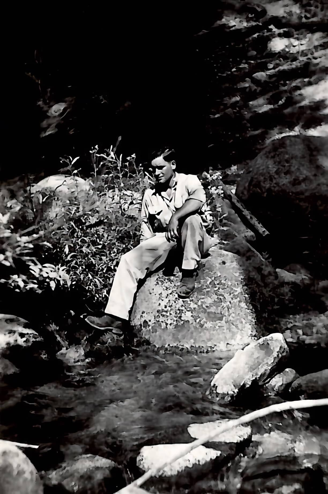

James R. Miller's
Topographic Maps
Collected from the USGS from 1950-1970
My grandfather whom I never met loved to venture all over the pacific west. He traveled almost everywhere in California and parts of Oregon and a bit inland. He took his family including my dad on almost every one of these trips.
His passions inspired my father's passions and mine as well. He loved to photograph nature, much like I do too. He was a draftsman by trade and was one of the best at it in his time. His handwriting was so neatly conducted. He found how to collect these maps by mailing a form in to the USGS in the 1950's.
My dad has held on to these maps and kept them in storage for years. They have not seen the best of days but a 50 year old piece of paper likely wouldn't. My grandfather used to take his drafting work to a shop in downtown Bakersfield called Blueprint Services Co.
They are still in business and still family run. We decided to have these scanned by the same shop this year in 2021 and it was so neat to see they still have a booth for USGS maps inside. The staff was super friendly and they did a phenomenal job putting these scans together!